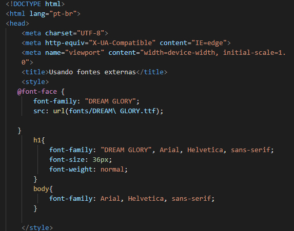

Baixando fontes
Para inserir uma fonte personalizada a sua página, use o código abaixo:

Dicas importantes
- Nomes compostos devem estar entre aspas duplas "";
- Criar uma pasta chamada "fonts" onde a fonte personalizada será inserida;
- A url deve ser sempre o caminho da pasta fonts/ nome da fonte entre aspas duplas como no exemplo;
- No Visual studio code fica mais fácil selecionar o caminho para a fonte. Basta segurar ctrl + space e selecionar a pasta e a fonte escolhida.